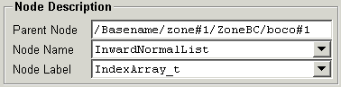

Node Description
This panel shows the node location (Parent Node), the Node
Name, and the Node Label. These values will be filled in when a
node is selected from the Node Tree.
The fields may also be edited to change the node location, name
or label, then applied to the file with the Create or Modify buttons. If the selected
node is a child of a linked node, these fields will be disabled.
If the selected node is a link, the Node Label field will be
disabled, however the location and name may still be modified.

- Parent Node
- Shows the location (parent) of the selected node.
Changing this value to another valid node, will allow a
new node to be created, or the current node moved using
the Create or Modify buttons.
-
- Node Name
- Shows the name of the selected node. This may be edited
to change the name of the current node or create a new
node using the Create or Modify
buttons. The button to the right invokes a drop-down
list containing a list of CGNS nodes. Selecting a node
from this list, will also fill in appropiate values for
the Node Label and Data Description panel.
-
- Node Label
- Shows the label associated with the current node. This
may be edited to change the label for the node, or a new
value selected from the list of CGNS values in the drop-down
list invoked with the button to the right.
[previous] [index]
[next]